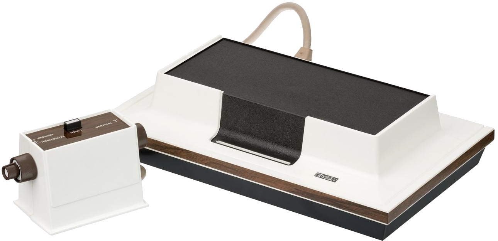

В первое поколение игровых систем выделяют игровые системы,
произведённые с 1972 по 1977 годы, начиная с Magnavox Odyssey.
Поколение продлилось до 1977 года, когда изготовители приставок типа
«Pong» покинули рынок из-за обвала видеоигровой индустрии в 1977 году, и дальнейшего успеха приставок,
pоснованных на микропроцессорах.
В Японии поколение продолжилось до 1980 года, когда было прекращено производство Nintendo Color TV Game.
(1972—1977) 